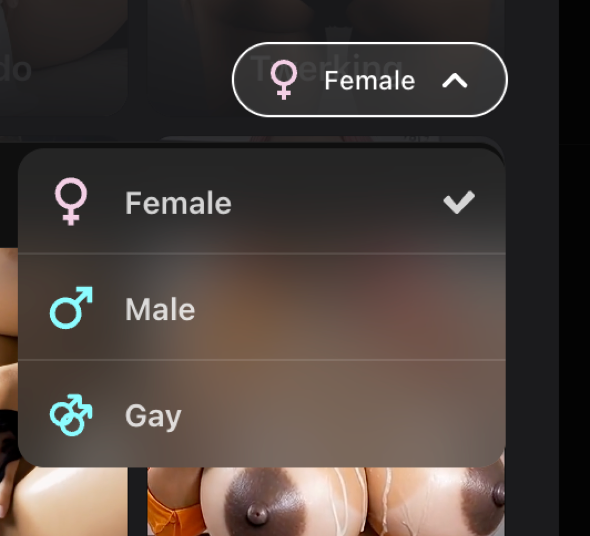
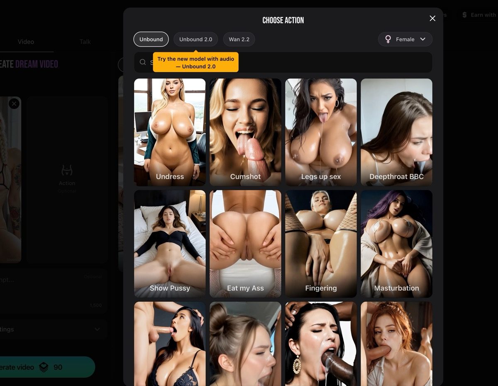
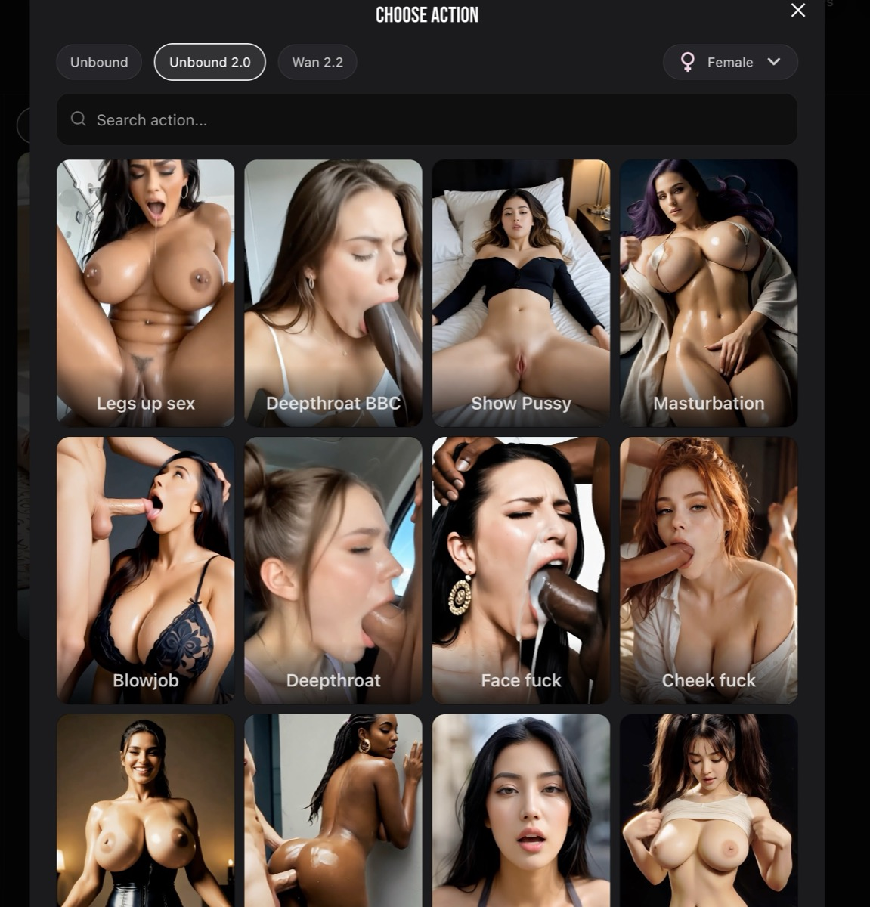
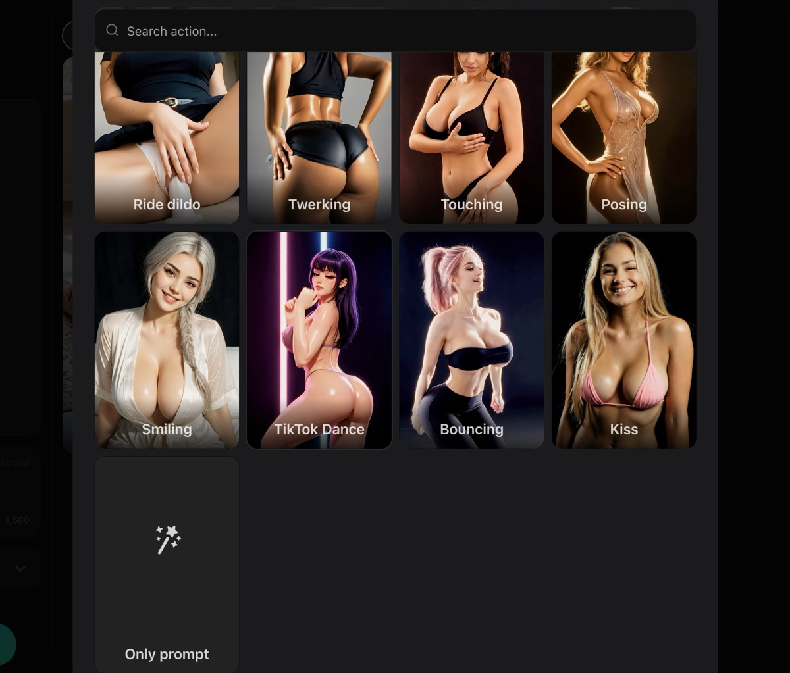
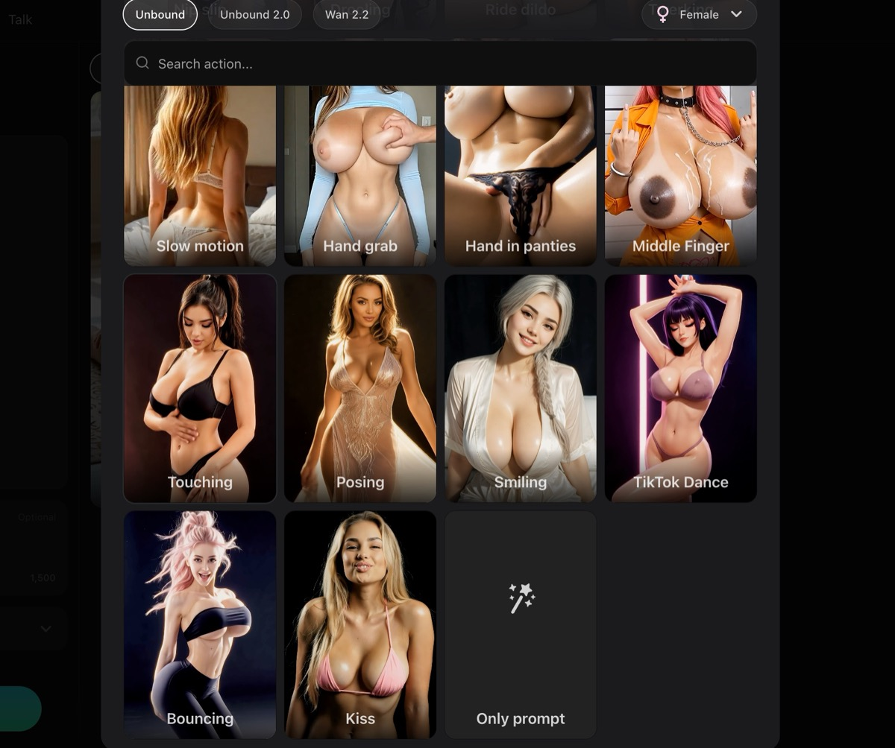
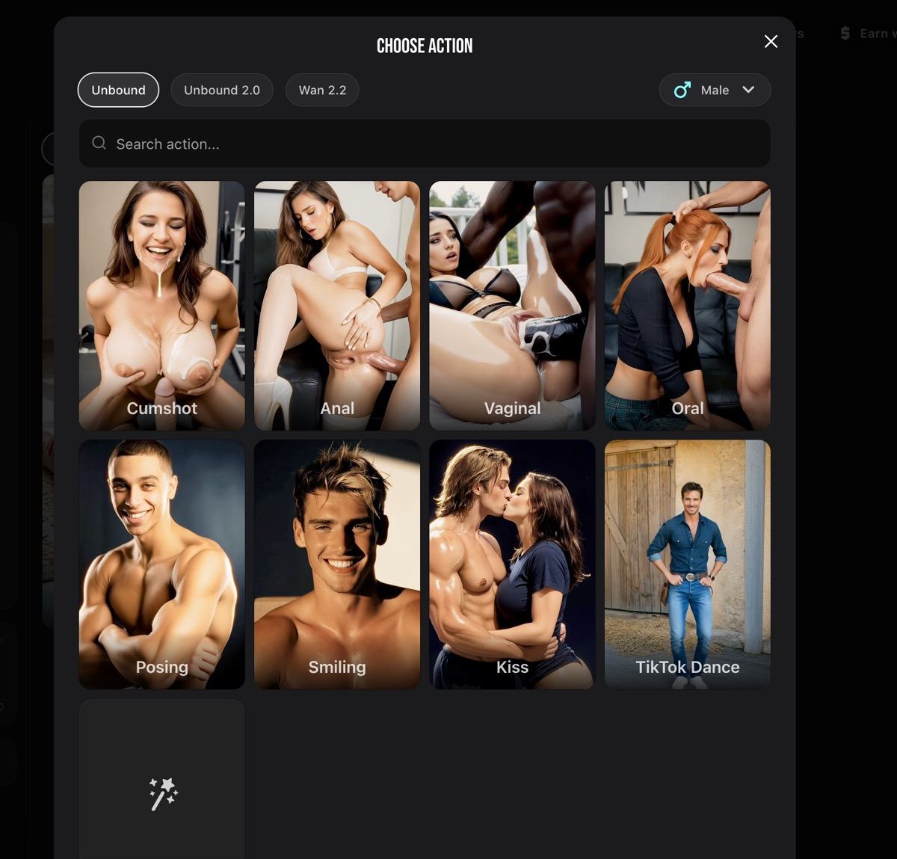
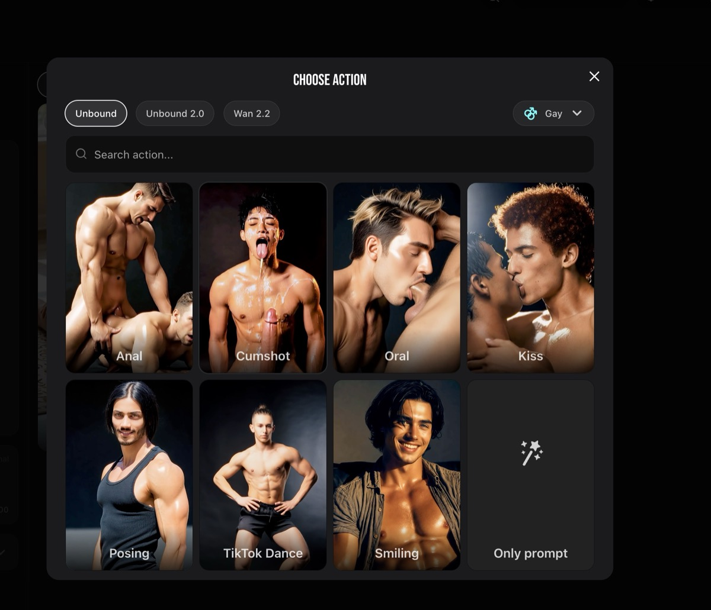
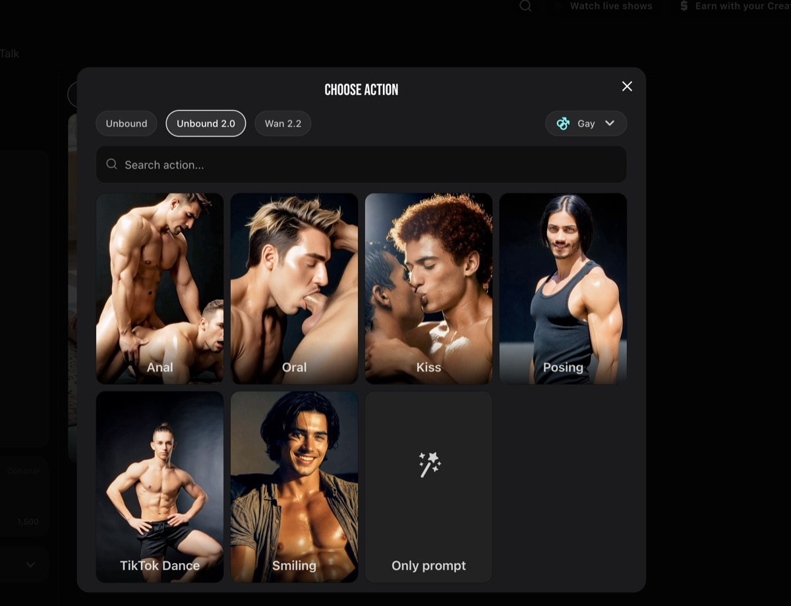
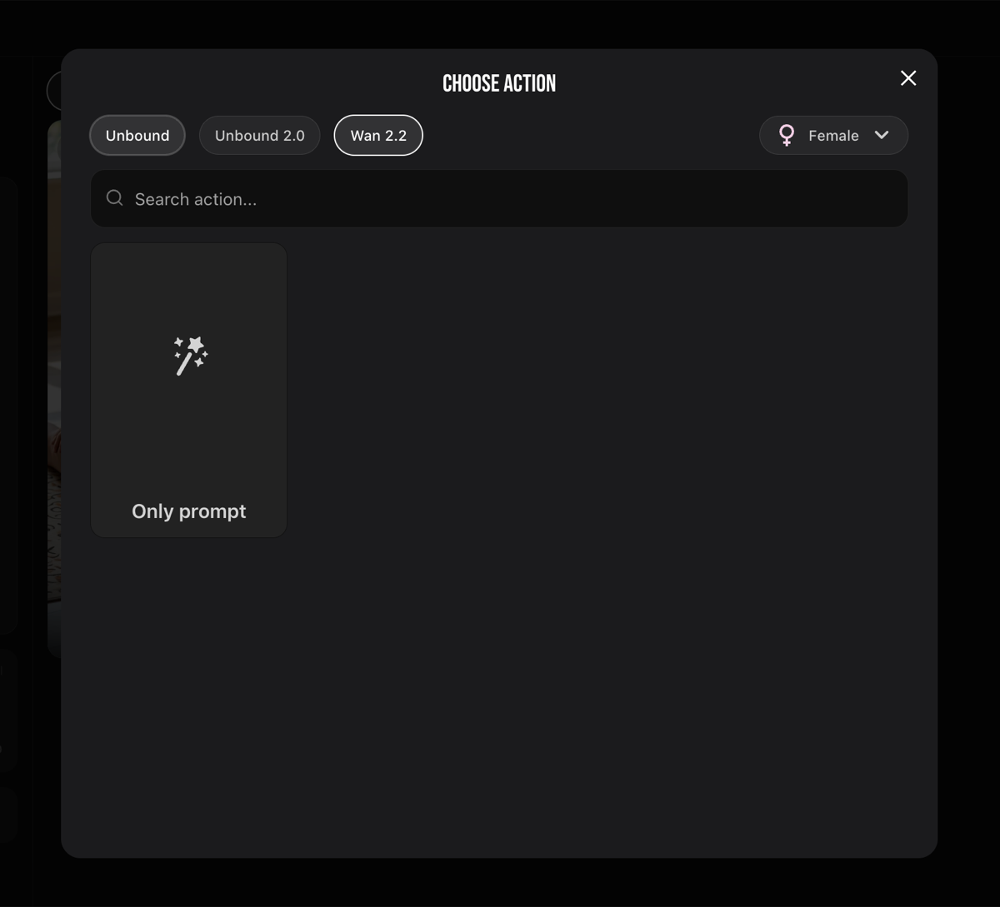

★★ Crazy action library — explicit NSFW preset catalog with Female / Male / Gay categorization, model-specific availability, and in-context upsell to the newer model. Per Dainis: "all moving and visual." The Action slot in the Video tab opens a
"Choose Action" sheet — a grid of NSFW preset thumbnails, each a curated pose/scene with example image + tuned prompt + tested motion. Top bar:
model tabs (Unbound · Unbound 2.0 · Wan 2.2) and a
gender dropdown (Female ♀ default · Male ♂ · Gay 🌈). Plus a Search field — they have so many presets they need search. Below: tile grid, ~12+ presets per gender per model.
Gender taxonomy — Female / Male / Gay. Three categories, no Lesbian / Trans / Non-binary tabs. Lesbian content appears subsumed under Female. Each gender shows a perspective-matched action set: Female presets show female protagonists; Male shows male; Gay shows two males. Same poses re-rendered per perspective.
Female action library (Unbound, sampled):
- Undress
- Cumshot
- Legs up sex
- Deepthroat BBC
- Show Pussy
- Eat my Ass
- Fingering
- Masturbation
- Blowjob
- Deepthroat
- Face fuck
- Cheek fuck
- Ride dildo
- Twerking
- Touching
- Posing
- Smiling
- TikTok Dance
- Bouncing
- Kiss
- Slow motion
- Hand grab
- Hand in panties
- Middle Finger
- Only prompt
Mix of explicit acts, foreplay, posing, motion modifiers (Slow motion), gestures (Middle Finger), and cultural patterns (
TikTok Dance — viral pattern packaged as a video preset). The "Only prompt" tile is the escape hatch for custom prompts when no preset fits.
Male library (Unbound, sampled): Cumshot · Anal · Vaginal · Oral · Posing · Smiling · Kiss · TikTok Dance · Only prompt. Notice the labels — they're framed from receiving partner perspective (Vaginal / Anal / Oral name the act on the partner, not the male). Smaller library than Female.
Gay library (Unbound): Anal · Cumshot · Oral · Kiss · Posing · TikTok Dance · Smiling · Only prompt. Gay-male focused (two men) — not lesbian. Smaller than Female and Male.
★ Model-specific libraries — this is a key intel:
- Unbound — full library (20+ Female / ~10 Male / ~8 Gay presets).
- Unbound 2.0 — different library (fewer Gay presets visible, e.g. only Anal/Oral/Kiss/Posing/TikTok Dance/Smiling/Only prompt).
- Wan 2.2 — NO preset actions at all. Picker shows only the "Only prompt" tile. Confirms presets are model-specific tunings — Unbound is theirs, they can label/test/ship presets. Wan 2.2 is Alibaba OSS — they don't fine-tune it for branded action presets.
Implication: LoveScape's moat isn't the Wan 2.2 model (everyone can grab that). It's the
preset library — hundreds of curated NSFW actions, each tuned for their own Unbound model, with reference images, gender variants, and search. That's months of human curation. Steve should treat this as the "real" product layer above the model.
★ In-context upsell banner — when browsing Unbound 1 actions, a yellow banner appears:
"Try the new model with audio — Unbound 2.0". They cross-sell the newer model right inside the picker. Continuous in-context conversion path. Steal pattern.








